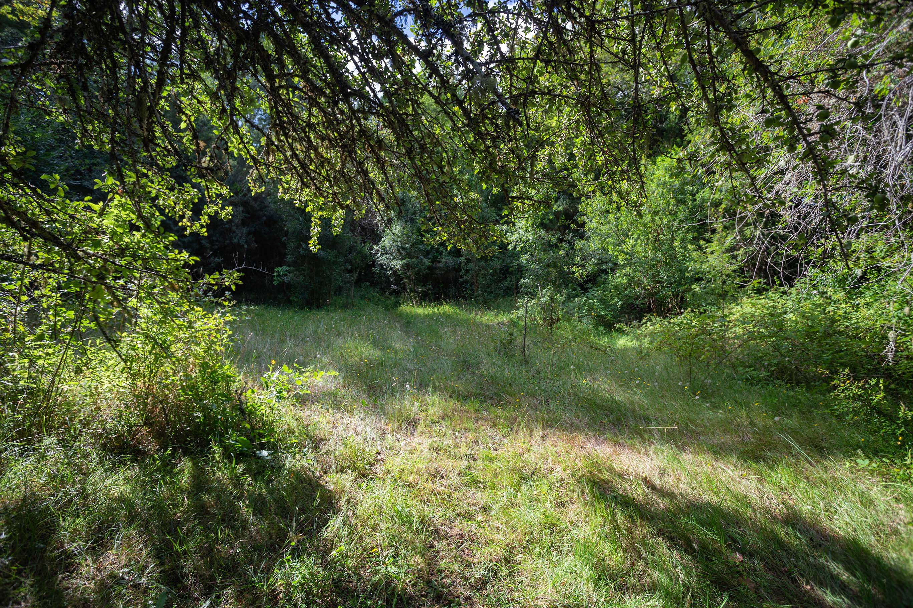

SENDERO AL BOSQUE HUMEDAL DEL RÍO LÓPEZ
Vive la aventura de adentrarse en el corazón de la Reserva Natural El Triwe por el sendero del Río López donde podrás encontrar diversos ecosistemas en un sólo lugar: Bosques de Robles y Coigues, Copihues y manglares de bosque sumergido.
En esta caminata cruzaremos praderas y vertientes para llegar al Santuario de las aves donde podremos escuchar a las aves cantar y observar el hábitat natural de los "tapaculos" como el chucao, el hued hued, el churrín del sur, entre muchos otros.
-
$26.00 POR PERSONA
-
$12.000 NIÑOS ENTRE 4 Y 12 AÑOS
-
MÍNIMO 2 PERSONAS
-
NIÑOS MENORES DE 4 AÑOS GRATIS
-
IVA INCLUIDO

3 a 3:30 horas apróximadamente
dificultad Baja a media
No incluye transporte
incluye Entrada a la reserva, guia especializado, merienda campestre. Capa de agua en caso de lluvia